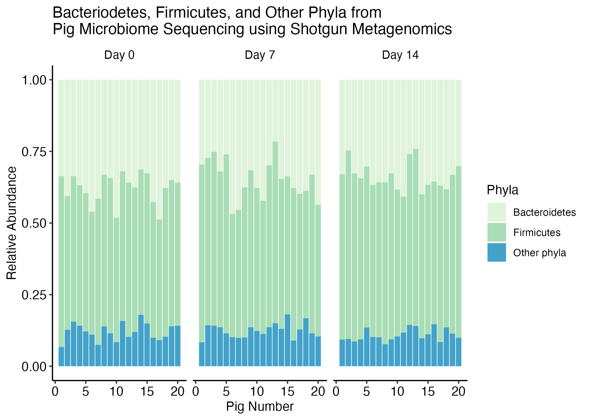

Interactive plots with plotly and ggplotly recitation
Week 12
Intoduction
Today we are going to work with microbiome data. In this recitation we are going to provide microbiome data as the result of the shotgun sequencing of the pig gut microbiome.
Pig gut microbiome data
The goal of this recitation is to replicate the following plot, which expresses the relationship between the Bacteroidetes and Firmicutes while the rest of the Phyla levels were assigned to others.
How many rows and columns do the data have?
How many phyla do the data contains and how many columns represents metadata of the experiment?
Create a new column with a new phyla assignation
Keep the phyla when they are Firmicutes or Bacteroidetes, otherwise assign Phyla to “Other phyla”.
Need a hint? (Click to expand)
Hint: You may need to pivot the data to evaluate the column names as observations